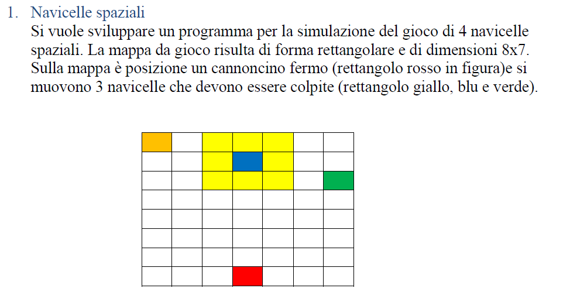

Cognome: Mascolo
Nome: Eliodoro
Matricola: 0124002547
Si vuole sviluppare un programma per la simulazione del gioco di 4 navicelle spaziali. La mappa da gioco risulta di forma rettangolare e di dimensioni 8x7.
Sulla mappa è posizione un cannoncino fermo (rettangolo rosso in figura)e si muovono 3 navicelle che devono essere colpite (rettangolo giallo, blu e verde).

Le tre navicelle ad ogni passo si muovono nel seguente modo:
• La navicella gialla ha la probabilità del 60% di muoversi di un singolo passo verso destra e il 40% di restare ferma.
• La navicella blue ha la probabilità del 70% di muoversi di due passi verso sinistra e il 30% di muoversi di un singolo passo verso sinistra.
• La navicella verde ha la probabilità del 40% di muoversi di tre passi verso destra, il 30% di muoversi di due passi verso destra e il 30% di muoversi di un singolo passo verso destra.
Ad ogni passo il cannoncino rosso spara un colpo solo se al precedente passo una delle navicelle ha sostato nella zona gialla. La partita termina o quando l’utente ha distrutto le 3 navicelle o quando si raggiungono 100 passi.
Sviluppare un algoritmo che prevede la visualizzazione della mappa da gioco e delle posizioni delle navicelle.
Effettuare almeno 3 simulazioni.
#include
#include
#include
/*************************************** PROCEDURE ********************************************/
void muovi_gialla(int, char [8][7], int *, int *);
void muovi_verde(int, char [8][7], int *, int *);
void muovi_blue(int, char [8][7], int *, int *);
int controllo(int, int);
void pulisci(int, char [8][7], int *, int *);
/*************************************** MAIN ********************************************/
/* Questo programma ha come finalità, quella di simulare un gioco simile alla battaglia navale. Nel nostro caso le navi sono le invece delle navicelle spaziali
che in base ad una percentuale pre impostata effettuano dei movimenti ed in caso si trovassero in un area specifica del campo da gioco queste verrebbero
colpite ed eliminate dal campo da un "cannone".
*/
int main()
{
srand((unsigned int)time(0) );
int i, j, G_x, G_y, B_x, B_y, V_x, V_y, random, sparato_G, sparato_V, sparato_B;
int p = 0;
int spara = 1;
char campo[8][7]=
{{'G', '.', '.', '.', '.', '.', '.',},
{'.', '.', '.', 'B', '.', '.', '.'},
{'.', '.', '.', '.', '.', '.', 'V'},
{'.', '.', '.', '.','.','.','.'},
{'.', '.', '.', '.','.','.','.'},
{'.', '.', '.', '.','.','.','.'},
{'.', '.', '.', '.','.','.','.'},
{'.', '.', '.', 'R', '.', '.', '.'}};
G_x = 0; G_y = 0; // Posizionamento iniziale delle navicelle secondo la traccia
B_x = 1; B_y = 3;
V_x = 2; V_y = 6;
for (i=0; i<8; i++) // Stampa della matrice prima che le navicelle si muovano
{
for (j=0; j<7; j++)
printf("%c ", campo[i][j]);
printf("\n");
}
p = 0; //passi
do {
p++;
if (sparato_V!=1) //Se la navicella verde non è stata colpita allora muoverla
{
random = rand()%10; // Genera randomicamente un numero che va da 0 a 9 che viene usato nella funzione per far muovere la navicella in un certo modo
muovi_verde(random, campo, &V_x, &V_y); // Richiamo della funzione per muovere la navicella verde
printf("\tRandom V: %d \t Coordinate: %d \t %d \n", random, V_x, V_y); // Stampa il numero generato random e le nuove coordinate
}
else
{
printf("\nLa verde e' stata colpita\n"); // Se la vanicella è stata colpita stampa
}
if (sparato_B!=1) //Se la navicella blue non è stata colpita allora muoverla
{
random= rand()%10; // Genera randomicamente un numero che va da 0 a 9 che viene usato nella funzione per far muovere la navicella in un certo modo
muovi_blu(random, campo, &B_x, &B_y); // Richiamo della funzione per muovere la navicella blu
printf("\n\tRandom B: %d \t Coordinate: %d \t %d \n", random, B_x, B_y); // Stampa il numero generato random e le nuove coordinate
}
else
{
printf("\nLa blu e' stata colpita\n"); // Se la vanicella è stata colpita stampa
}
if (sparato_G!=1) //Se la navicella gialla non è stata colpita allora muoverla
{
random= rand()%10; // Genera randomicamente un numero che va da 0 a 9 che viene usato nella funzione per far muovere la navicella in un certo modo
muovi_gialla(random, campo, &G_x, &G_y); // Richiamo della funzione per muovere la navicella gialla
printf("\n\tRandom G: %d \t Coordinate: %d \t %d \n", random, G_x, G_y); // Stampa il numero generato random e le nuove coordinate
}
else
{
printf("\nLa gialla e' stata colpita\n"); // Se la vanicella è stata colpita stampa
}
printf("\n");
for (i=0; i<8; i++) //STAMPA LA MATRICE AGGIORNATA
{
for (j=0; j<7; j++)
printf("%c ", campo[i][j]);
printf("\n");
}
for (i=0; i<3; i++) // Ad ogni attivazione stampo il passo e le coordinate
{
printf("\n");
printf("\n\n");
printf("\n\t\t\t passo = %d\n", p);
printf("\t V= %d %d ", V_x, V_y);
if (sparato_V==1) // Visualizza la stringa "Colpita" se il valore "Sparato" (che viene dato in output dalla funzione "controllo") è uguale ad 1
{
printf(" Colpita");
}
printf("\n\t B= %d %d ", B_x, B_y);
if (sparato_B==1)
{
printf(" Colpita");
}
printf("\n\t G= %d %d ", G_x, G_y);
if (sparato_G==1)
{
printf(" Colpita");
}
printf("\n");
if (sparato_V!=1) // Se "sparato" è diverso da 1 richiamo la funzione controllo per controllare se la navicella viene colpita
{
sparato_V= controllo(spara, V_y);
}
if (sparato_B!=1)
{
sparato_B= controllo(spara, B_y);
}
if (sparato_G!=1)
{
sparato_G= controllo(spara, G_y);
}
pulisci(sparato_V, campo, &V_x, &V_y); // Viene chiamata la funzione "pulisci" e se una navicella è stata colpita la elimina dalla matrice
pulisci(sparato_B, campo, &B_x, &B_y);
pulisci(sparato_G, campo, &G_x, &G_y
}
}
while (((sparato_G!=1) || (sparato_V!=1) || (sparato_B!=1)) && (p < 100)); // Esegue il ciclo finchè tutte e tre le navicelle non sono state distrutte oppure il contatore passi è arrivato a 100
printf("\n\n\n\t Fine partita\n\n\n");
system("PAUSE");
return 0;
}
/*************************************** FUNZIONI ********************************************/
/* Il valore random: è il numero generato nel main mentre x, y sono coordinate delle navicelle ed
y è l'unica che cambia con il passare dei turni, siccome, le navicelle si muovono solo verso destra e verso sinistra (che sono le colonne)*/
/* Questa function con il semplice uso di if ed else, in base al numero generato randomicamente, muove la navicella gialla.
In input viene data alla function il numero generato randomicamente, il campo di gioco e le coordinate correnti della navicella
e restituisce in output la nuova posizione della navicella sul campo di gioco. */
void muovi_gialla(int random, char campo[8][7], int *G_x, int *G_y)
{
campo[*G_x][*G_y]='.'; // Il campo all'inizio viene pulito
if (random<6)
{
if (*G_y==6) // Si fa attenzione a quando la navicella raggiunge il bordo
*G_y=0;
else // Incrementa la posizione di un passo verso destra
*G_y = *G_y + 1;
}
campo[*G_x][*G_y]='G'; // Il campo alla fine viene aggiornato con le nuove coordinate
}//Fine function
/*Questa function con il semplice uso di if ed else, in base al numero generato randomicamente, muove la navicella verde.
In input viene data alla function il numero generato randomicamente, il campo di gioco e le coordinate correnti della navicella
e restituisce in output la nuova posizione della navicella sul campo di gioco. */
void muovi_verde(int random, char campo[8][7], int *V_x, int *V_y)
{
campo[*V_x][*V_y]='.'; // Il campo all'inizio viene pulito
if(random<4)
{
if (*V_y==6) // Si fa attenzione a quando la navicella raggiunge il bordo
*V_y=2;
else if (*V_y==5) // Si fa attenzione a quando la navicella raggiunge il bordo
*V_y=1;
else if (*V_y==4) // Si fa attenzione a quando la navicella raggiunge il bordo
*V_y=0;
else // Incrementa la posizione di tre passi verso destra
*V_y=*V_y+3;
}
else if (random>=4 && random <=6)
{
if (*V_y==6) // Si fa attenzione a quando la navicella raggiunge il bordo
*V_y=1;
else if (*V_y==5) // Si fa attenzione a quando la navicella raggiunge il bordo
*V_y=0;
else // Incrementa la posizione di due verso destra
*V_y=*V_y+2;
}
else if (random >=7)
{
if (*V_y==6) // Si fa attenzione a quando la navicella raggiunge il bordo
*V_y=0;
else // Incrementa la posizione di un passo verso destra
*V_y=*V_y+1;
}
campo[*V_x][*V_y]='V'; // Il campo alla fine viene aggiornato con le nuove coordinate
}//Fine function
/*Questa function con il semplice uso di if ed else, in base al numero generato randomicamente, muove la navicella blu.
In input viene data alla function il numero generato randomicamente, il campo di gioco e le coordinate correnti della navicella
e restituisce in output la nuova posizione della navicella sul campo di gioco. */
void muovi_blu (int random, char campo[8][7], int *B_x, int *B_y)
{
campo[*B_x][*B_y]='.'; // Il campo all'inizio viene pulito
if (random<7)
{
if (*B_y==1) // Si fa attenzione a quando la navicella raggiunge il bordo
*B_y=6;
else if (*B_y==0) // Si fa attenzione a quando la navicella raggiunge il bordo
*B_y=5;
else // Decrementa la posizione di due passi verso sinistra
*B_y=*B_y-2;
}
else if (random>=7)
{
if (*B_y==0) // Si fa attenzione a quando la navicella raggiunge il bordo
*B_y=6;
else // decrementa la posizione di un passo verso sinistra
*B_y=*B_y-1;
}
campo[*B_x][*B_y]='B'; // Il campo alla fine viene aggiornato con le nuove coordinate
}//Fine function
/* Questa function ha il compito di controllare se una delle navicelle si trova nel quadrato dove le navicelle vengono colpite.
Tramite l'uso di if ed else se la navicella ha come coordinata y proprio un valore che corrisponde a quello del quadrato questa viene "sparata".
Riceve in input il valore intero spara (1) e l'intero y che sarebbe la coordinata, mentre da in output il valore di "sparato" quindi 0 oppure 1.*/
int controllo(int spara, int y)
{
int sparato;
if ((spara==1)&&((y==3)||(y == 2) || (y == 4))) //Se la y equivale a 2, 3, 4 la variabile "sparato" resta ad 1 e quindi la navicella viene colpita
{
sparato=1;
}
else //Se la y ha qualsiasi altro valore "sparato" va a 0 e quindi la navicella non è stata colpita
{
sparato=0;
}
return sparato;
}//Fine function
/* Questa ha il compito di rimuovere la navicella colpita dalla matrice.
In input riceve il valore di "sparato", il campo da gioco e le coordinate x e y.*/
void pulisci(int sparato, char campo[8][7], int *x, int *y)
{
if (sparato == 1)
campo[*x][*y] = '.'; /* Se il valore di sparato equivale ad 1 significa che la navicella è stata colpita e quindi alle coordinate nelle quali
si trovava quest'ultima viene messo il carattere punto per eliminare la navicella*/
}//Fine function
1)In questa simulazione si vede che, come prima operazione, viene stampato il campo da gioco e le navicelle nelle loro posizioni iniziali, successivamente vengono generati, randomicamente, dei numeri per ognuna delle navicelle.
In base al numero generato vengono stampate le nuove coordinate e le navicelle vengono spostate in quelle determinate posizioni, visualizzando graficamente il tutto.
Vediamo che ad ogni passo il programma stampa le coordinate e se le navicelle sono state colpite o meno. In questo caso la partita finisce perchè tutte e tre le navicelle sono state colpite in due "passi".

|

|
2)Nella seconda simulazione vediamo che, nei primi due passi, vengono eliminate la navicella verde e la navicella gialla.
La navicella blu continua a spostarsi per altri due passi, fino a quando non viene eliminata al quarto passo e così, colpite le tre navicelle, il programma si arresta.

|

|

|
3)Nell'ultima simulazione, la più lunga, vediamo che in base ai numeri generati le navicelle riescono a non essere eliminate per più tempo: tuttavia, dopo 5 passi vengono colpite ed eliminate. La causa è riconducibile al fatto che l'area nella quale le navicelle vengono colpite copre la metà del campo giocabile, lasciando poche probabilità di salvezza alle navicelle.

|

|

|

|